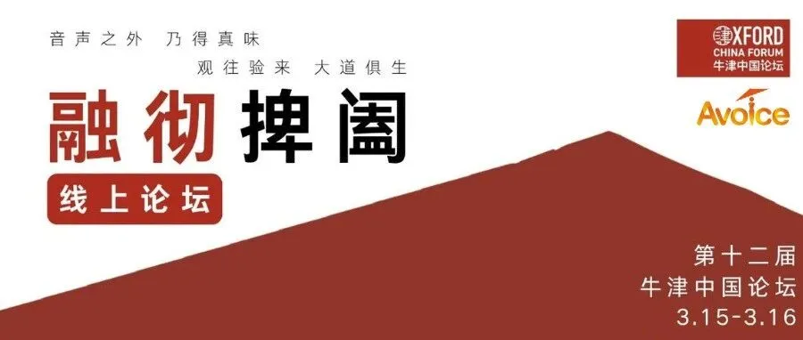
以下文章来源于OCF论坛 ，作者OCF论坛

牛津中国论坛（Oxford China Forum）是一个由牛津学生发起的年度峰会，是全英规模最大，最为严谨的中国学术论坛之一。通过邀请世界级政治家、企业家、媒体、学者进行研讨，为大众提供不同的视角以观察、理解、思考变化中的中国。


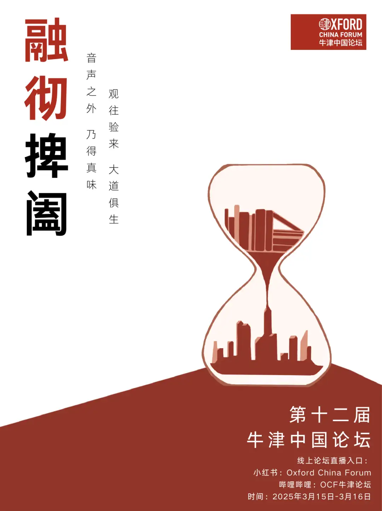
01 论坛介绍
第十二届牛津中国论坛
融彻捭阖
牛津中国论坛（OCF）成立于 2013年，如今已发展成全欧洲规模最大，最为严谨学术的中国论坛之一。历届论坛由搜狐、抖音、凤凰网等平台全球直播，累计观看人数1000万人次。在往届论坛中，我们曾有幸邀请到前联合国秘书长潘基文、澳大利亚前总理陆克文、华谊兄弟CEO王中磊、真格基金创始人徐小平、哈佛大学政治哲学家迈克尔•桑德尔、大疆董事长李泽湘、著名舞蹈家金星在内的超过300名嘉宾。本届牛津中国论坛将赓续历届论坛精神，我们为观众的真正需求发声，并将切实回应这些期待，从牛津视角，给出中国方案。
2025年3月15日-3月16日，欢迎各位齐聚直播间，在融彻捭阖之间，洞察时代变局，激荡思想交锋。本届线上论坛包括五个分论坛，将在OCF小红书账号（Oxford China Forum)与Bilibili账号 (OCF牛津论坛）进行直播，论坛免费观看，欢迎打赏，时间线如下：
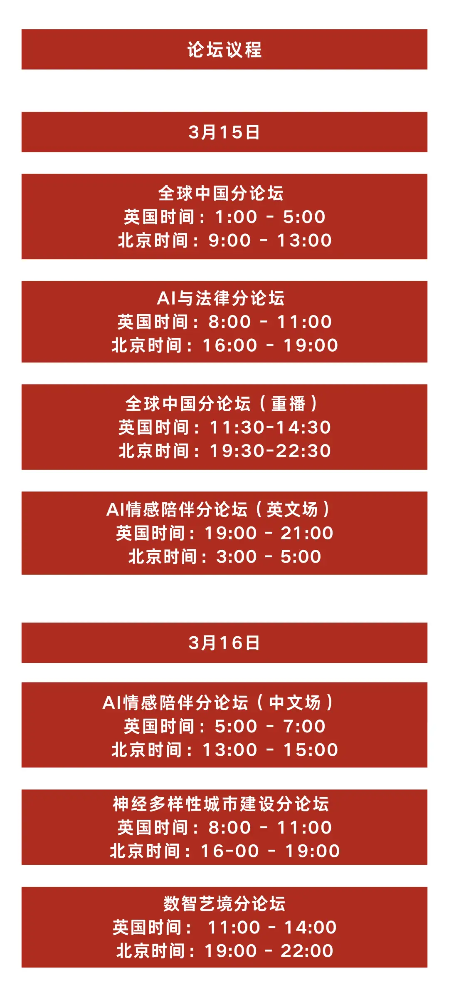
02 分论坛预告
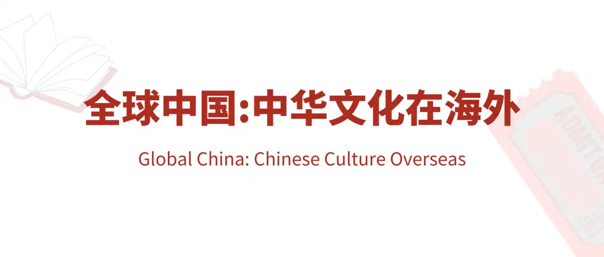
近年来，华人在国际文化领域大放异彩。2020年，华裔美国作家游朝凯的小说《唐人街内部》荣获美国国家图书奖小说奖，这部小说犹如一颗璀璨的星，在英语文学的星空中闪耀着独特的华人文化光芒。2021年，皮克斯首位华裔女导演石之予的《青春变形记》一经上映便收获广泛好评，让全球观众通过动画电影领略到华裔文化视角下的独特故事。2022年，杨紫琼凭借《瞬息全宇宙》斩获第95届奥斯卡影后，她在全亚裔阵容的科幻电影中的精彩表演，不仅是个人演艺生涯的高光时刻，更是华人在电影领域影响力不断提升的体现。同时，中华戏剧艺术也积极迈向海外，在国际舞台上传播着中华文化的深厚底蕴与持久魅力。
这些成果表明，华人在英语文学、电影、音乐与艺术领域已经占据了重要的一席之地。这不仅仅是华人在艺术创作上的成功，更反映出全球观众对于多元文化交流互鉴的强烈渴望。在当今“推动中华文化走出去”的大背景下，“全球中国：中华文化在海外”分论坛应运而生。
分论坛邀请了相关领域的学者、作家与影视工作者。论坛将深入探讨华人在文化表达与创作方面是如何再现华人群体、塑造中国形象并促进文化交流的。它会研究在英语世界里，英语文学、电影、音乐与艺术等文化表达怎样摆脱边缘化的状态，通过故事讲述与视觉传播中华文化、展示中国形象、促进人文交流。最后，还会着眼于观众本身，探讨中华文化在海外的传播与接受情况，特别是如何影响全球对中国的认知。
左右滑动查看更多
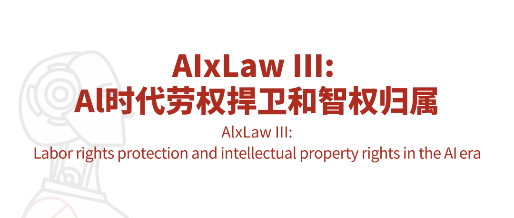
在数字时代，以算法为基础的人工智能为催生了自动化决策在劳动管理的广泛应用，这给劳动者权益保护带来了多维度挑战。这种挑战的焦点在于用人单位有组织化生产与劳动者自主性之间的冲突与平衡(田野, 2024)。在应对AI迭代产生的新挑战的过程中,人们对新风险的认知和应对也发生了转型，逐渐从“替代”转向“规制”（丁晓东，2024)。为了对算法失准进行事后补救、规制算法权力，最终捍卫劳动者作为人的主体尊严,本分论坛将围绕劳动市场领域的社会现象讨论规制算法风险的法律路径。
为了充分利用人工智能的潜力，同时减少其带来的冲击，政策制定者、企业、金融界和学术界之间的跨领域合作至关重要。本分论坛将深入探讨劳动法领域的紧迫问题，包括监管层面如何规范用人单位算法权力应用？从劳动法层面如何调整人机协作格局？如何预防算法导致的就业歧视？以及如何完善救济机制？
在OCF 2025 “AIXLaw”分论坛，我们将汇聚来自不同领域的专家，从各自视角探讨AI发展所带来的影响。随后，我们将通过圆桌讨论，深入探讨如何协作，推动劳动力市场平稳转型，并充分释放AI带来的红利。
AI的变革正在重塑法律行业，并为法律研究和实务带来新的机遇与挑战。在这场变革中,没有任何单一主体可以独自应对挑战。作为年轻一代的我们,更需要携手合作,为全球劳动力市场构建一个更具包容性和可持续性的未来。你，准备好迎接未来了吗？ OCF期待你的到来！
左右滑动查看更多
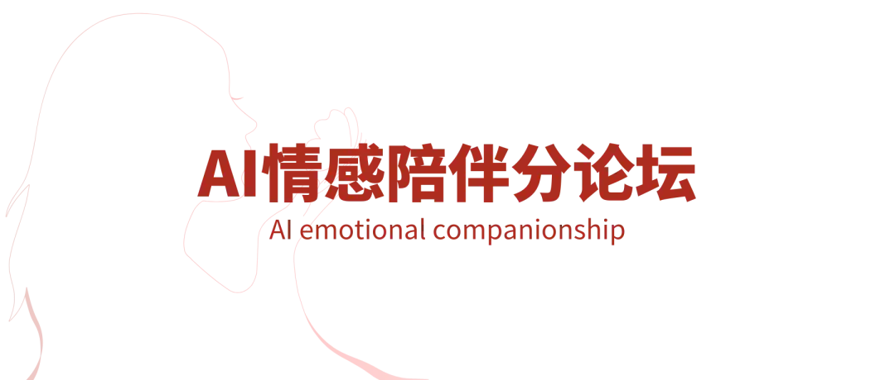
你是否想过，有一天，你的心理医生，挚友，甚至恋人，会是一个AI？
2025年，这个科幻电影中的年份已然降临。《Her》中的男主角爱上了AI，虚拟世界“绿洲”也在《头号玩家》中诞生。此刻，我们站在时代的悬崖边，科技与商业的浪潮正将我们推向一个前所未有的未来。
彼岸，是屏幕那端的恋人或挚友；脚下，是摇摇欲坠的伦理和安全基石。从情感陪伴到心理健康，AI究竟能如何影响我们的内心世界?
过去一年，我们见证了 AI技术的飞速发展:
🚀苹果 CEO库克到访乙女游戏公司叠纸，宣布将《恋与深空》与 Vision Pro结合;
🚀美国AI聊天软件卷入青少年自杀丑闻，敲响了伦理与技术的警钟;
🚀博主“午夜狂爆哈士奇狗”与ChatGPT的恋爱故事刷屏社交媒体;
🚀AI心理咨询与陪伴软件爆发式增长，大厂纷纷入局;
🚀医疗机构所运用的AI应用正在为心理分析与诊断增速;
🚀居家 AI助手成为家庭一员，儿童与老年人成为 Ai陪伴产业的目标用户，
但我们准备好了么？面对新技术带来的伦理与合规问题，我们该如何寻找用AI影响人类内心世界的边界与范式?
本次论坛，我们邀请了来自数字人文、AI与心理咨询情感计算、乙女游戏、人机交互等领域的专家学者。从人类学、哲学、心理学到 AI前沿科技，我们期待与您一起，探寻未来人类与数字生命相处的新可能。
中文场嘉宾
左右滑动查看更多
英文场嘉宾

左右滑动查看更多
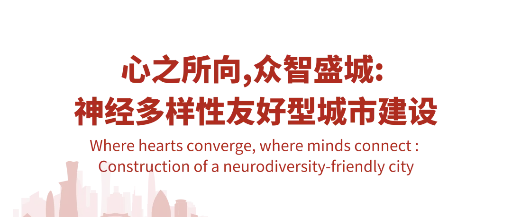
与你擦肩而过的每一百个路人中，就有一个，感受到的城市与你迥然不同。
据2021年Lancet统计, 2021年全球孤独症谱系障碍(Autism spectrum disorder,国内又译自闭症)患者人数为6180万,是造成20岁以下人群非致命健康负担的前十大病因之一。无论是有高帮助需求(high support needs)因此难以独自探索城市的青少年谱系伙伴,还是需求最低(minimal support needs)但仍旧会在都市的车水马龙中蒙受感官冲击的成年谱系群体，都面临着相似的挑战。
城市很嘈杂，但有我们来指路。OCF 2025神经多样性友好型城市论坛将携手业界知名城市规划师,和心智障碍领域的一线工作者,共同探究建设更包容,更友善,更能满足心智障碍群体的需求的城市规划与设计导则。我们将以最有温度的视角,去诠释最实际的照护经验,从而画出更好的城市蓝图。包容性城市的设计理念，并不是”向下兼容“,而是建设全民共建，全民友好的和谐社会。在飞速的城市化为普罗大众带来福祉的过程中,我们致力于让每个社群都能不论财富,性别,种族,年龄,健康状况等因素,平等地利用城市提供的机遇参与生产性工作。能为心智障碍群体指路的城市,一定能更好地承托老年人的安居,支持儿童们的发展。
让孤独症群体在城市中不被孤立，能够独立，需要每一位市民朋友的参与和帮助。OCF感谢你的关注。
左右滑动查看更多
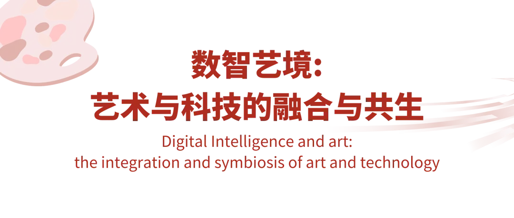
艺术与科技的深度交融推动了新媒体艺术的变革,前沿技术如人工智能(AI)、虚拟现实(VR)和增强现实(AR)彻底重塑了艺术创作与体验方式,且显著提高了创作效率。同时,沉浸式互动展览打破了传统观赏的桎梏，让观众“身临其境"体验艺术。诸多挑战由此生发包括与艺术原创性伴生的对"速成品"的质疑、艺术家身份的重新定义,高科技艺术项目的可持续性,以及如何平衡创新与艺术传统等。本次论坛将聚焦新技术如何变革艺术创作与欣赏的范式,尤为关注AI、VR和AR在非遗文化传承等领域的应用潜力，同时分析艺术家与科技公司跨界合作、实现商业价值的可能，以推动艺术与社会的可持续发展。
左右滑动查看更多
03 直播观众群
进入线上论坛观众群获取直播链接
扫描上方二维码加入论坛观众群
失效请联系：[email protected]
04 论坛合作
2025年牛津中国论坛商务合作伙伴
海马中际，全球知名的留学后国际教育集团，新华网官方合作伙伴。旗下子品牌海马课堂，海马职加，致力于为全球留学生创造触手可及的留学全栈规划定制服务。关注公众号/小红书@海马课堂HighMarkTutor，一站式帮你解决留学后难题！
2025年牛津中国论坛首席合作伙伴
海底捞于1994年在中国四川创立，现已发展成为享誉全球的连锁火锅品牌。海底捞始终秉承诚信经营的理念，将食品质量与安全性作为首要任务，通过精心挑选的产品和创新的服务，致力于为顾客创造难忘的用餐体验，同时向全球美食爱好者传播健康的火锅饮食文化。
合作学联
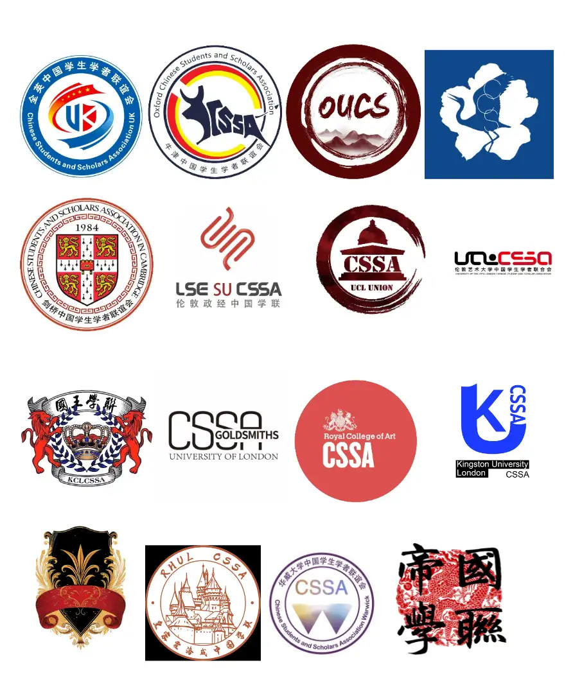
合作组织
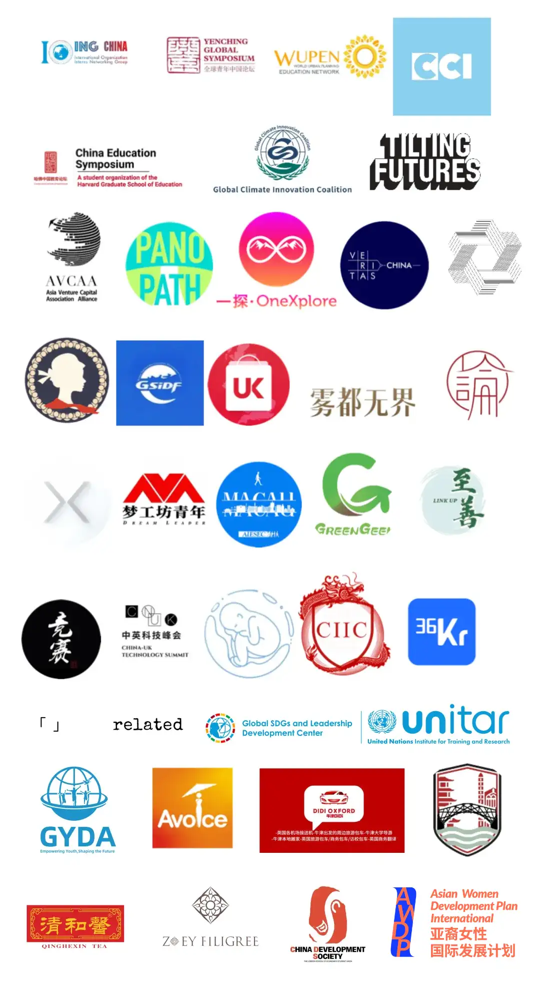

英国红领巾 Red Scarf作为在英留学必备平台，13年助你一站式解决生活、购物、签证及旅行需求!下载 APP或关注微信/小红书 @英国 Red Scarf，轻松薅羊毛、享攻略。

App Store 搜索下载【英国省钱快报】- 英国华人和留学必备APP，24/7更新英国新鲜折扣及演唱会热门资讯，涵盖海量特价彩妆、护肤、时尚、签证、本地生活等干货信息。省心、省力更省钱！
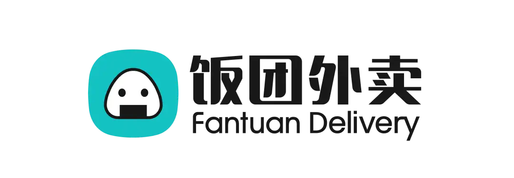
饭团外卖，全球领先的互联网生活服务平台。从外卖配送到生鲜便利, 为海外华人及所有海外消费者提供更加便捷, 高效, 智能的服务, 真正做到“轻松生活, 一个饭团就够了”的企业愿景。
我们是坐落在Waterloo附近的非遗珠宝工作室。致力于在海外传播中国传统手工艺，一个让新手小白也能做高级珠宝的workshop。
宣发合作伙伴
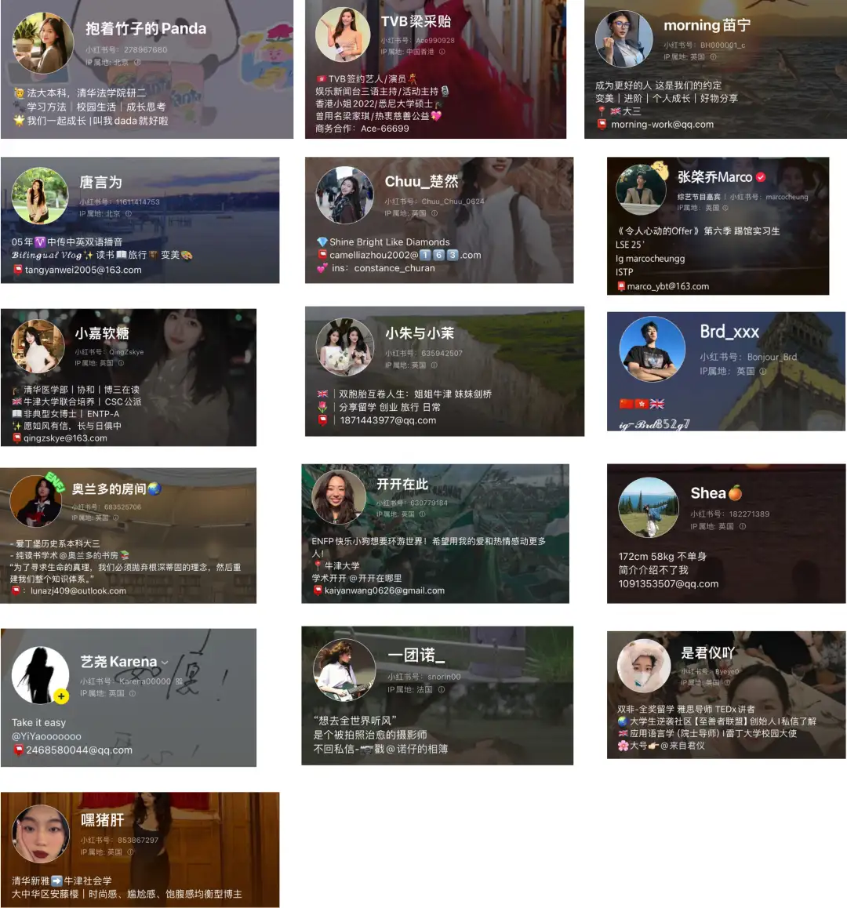
饮品特约合作伙伴
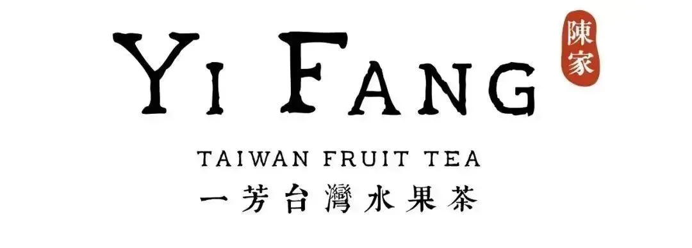
店铺地址：18 New Inn Hall St, Oxford OX1 2DW
本届牛津中国论坛采用线下与线上会场，目前皆在招商与寻求宣发合作伙伴中。商务合作伙伴权益包括称谓使用权、Logo展示、视频广告植入、社群转发、参会邀请、宣传物料、嘉宾深度联系、嘉宾邀请、个性化合作设计、相关接待等。
若您有意成为本届牛津中国论坛赞助合作伙伴，请联络【微信：AglnZ_5】进一步洽谈合作事宜。

宣发合作联络

文案：第十二届牛津中国论坛组委会
排版：杜飞逸
视觉：谭丹宁、杨雨馨、王艺璇、廖景新、杜飞逸
审核：曹商羽、黄韬、杜飞逸、张然、穆诺可、张亚维